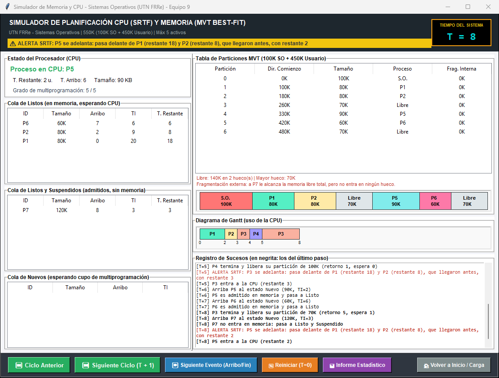
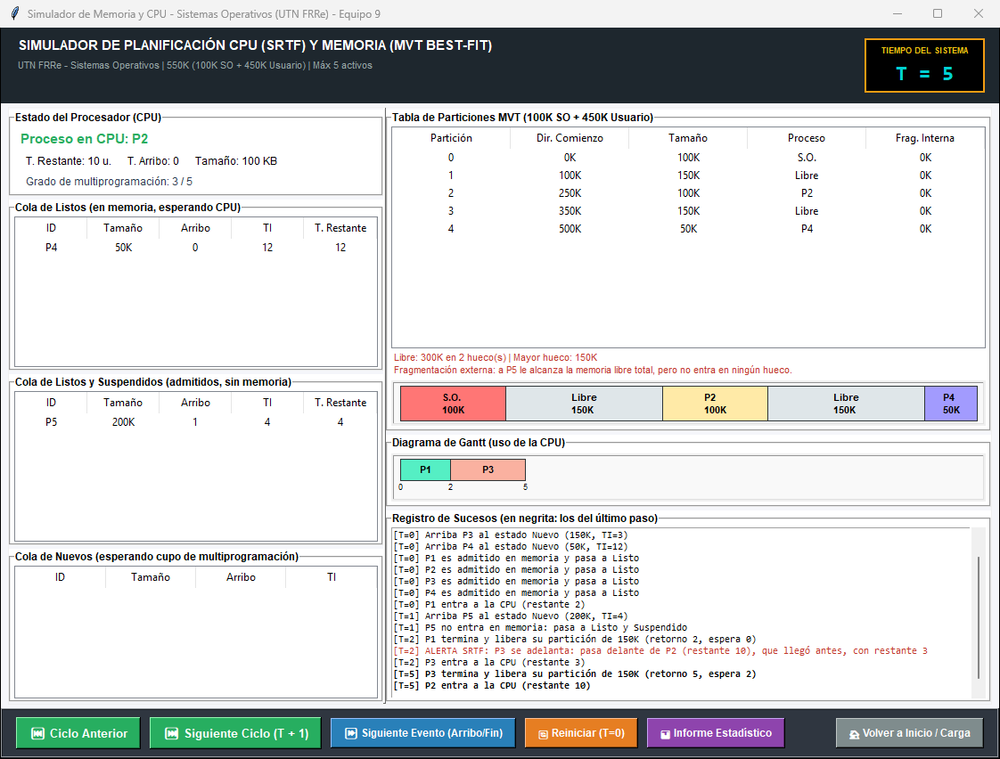

Universidad Tecnológica Nacional — Facultad Regional Resistencia Ingeniería en Sistemas de Información (verificar carrera)
Cátedra: Sistemas Operativos
Trabajo Práctico Integrador
Simulador de Asignación de Memoria y Planificación de CPU
Documentación del código
Equipo
9
Integrantes
Apellido, Nombre — Legajo Apellido, Nombre — Legajo Apellido, Nombre — Legajo Apellido, Nombre — Legajo
Este documento describe la implementación del simulador desarrollado para el Trabajo Práctico
Integrador de Sistemas Operativos. El programa simula, instante por instante, la asignación de
memoria con particiones variables (MVT) usando la política Best-Fit, y la
planificación de la CPU con el algoritmo SRTF (Shortest Remaining Time First,
expropiativo).
El usuario carga hasta 10 procesos (desde un archivo CSV o a mano), avanza la simulación de a un
instante o hasta el próximo evento, puede volver atrás, y al final obtiene un informe con los
tiempos de retorno y de espera de cada proceso, sus promedios y el rendimiento del sistema.
El código está escrito en Python 3 con programación estructurada (solo funciones y
diccionarios, sin clases). La interfaz gráfica usa Tkinter, que viene incluido con Python, y
se distribuye como un ejecutable de Windows generado con PyInstaller. El uso de la aplicación se
explica en el instructivo (README.pdf); este documento se centra en cómo está
construida.
2. Requerimientos de la consigna
Requerimiento
Cómo se implementa
Memoria de 550K: 100K para el SO y 450K para usuario
MEMORIA_SO y MEMORIA_USUARIO en constantes.py.
Las particiones de usuario empiezan en la dirección 100K.
Particiones variables (MVT)
memoria.py: cada asignación corta un hueco al tamaño exacto del proceso.
Política de asignación Best-Fit
buscar_hueco_best_fit(): el hueco libre más chico donde entra el proceso.
Planificación SRTF (expropiativa)
planificador.py y planificar_cpu() en simulacion.py.
Grado de multiprogramación máximo 5
MAX_MULTIPROGRAMACION; cuentan Ejecución + Listos + Listos y Suspendidos.
Hasta 10 procesos por simulación
MAX_PROCESOS; si un archivo trae más, se toman los 10 primeros válidos.
Procesos de más de 450K no se admiten
Se rechazan al validar la entrada, con un mensaje que lo explica.
Mostrar el estado en cada instante: CPU, colas, tabla de particiones, fragmentación
Pantalla de simulación de interfaz.py.
Informe final: retorno, espera, promedios y rendimiento
calcular_estadisticas(); se muestra en pantalla y se exporta a TXT.
Agregar otros requerimientos del enunciado si faltan
3. Arquitectura
3.1. Programación estructurada
El programa no usa clases. Todo el estado de una simulación vive en un único diccionario,
estado, que se pasa como parámetro a cada función. Los procesos y las particiones de
memoria también son diccionarios. Se eligió este enfoque porque todos los integrantes del equipo
pueden leer y explicar cualquier parte del código, y porque hace muy simple guardar una copia de
la simulación completa (alcanza con copy.deepcopy(estado)).
3.2. Módulos y dependencias
El código se divide en siete módulos. Cada uno importa solo de los que están por debajo en el
diagrama, así que no hay dependencias circulares.
Figura 1: Dependencias entre módulos (una flecha de A a B significa «A importa de B»).
Por claridad se omiten algunas: interfaz.py también usa memoria.py,
planificador.py y constantes.py para dibujar, e informe.py usa
memoria.py para calcular la fragmentación.
Módulo
Líneas
Responsabilidad
constantes.py
6
Valores fijados por la consigna: tamaños de memoria, grado de multiprogramación y cantidad de procesos.
memoria.py
80
Memoria MVT: crear, buscar hueco Best-Fit, asignar, liberar con fusión de huecos, tabla de particiones y resumen de fragmentación.
planificador.py
29
SRTF: claves de orden y elección del proceso que ocupa la CPU.
simulacion.py
261
Motor: creación del estado, arribos, admisión, planificación, ejecución, avance y estadísticas.
entrada.py
163
Lectura del CSV y validación de los procesos (del archivo y del formulario).
informe.py
65
Texto del informe estadístico para exportar a TXT.
interfaz.py
673
Interfaz gráfica en Tkinter: pantalla de carga, pantalla de simulación e informe.
3.3. Separación entre motor e interfaz
Los módulos de la simulación (simulacion.py, memoria.py y
planificador.py) no importan nada de Tkinter ni de la interfaz. La interfaz solo
llama a las funciones del motor y después dibuja lo que hay en estado. Esto tiene tres
ventajas:
El motor se puede probar con tests automáticos sin abrir ninguna ventana (sección 9).
Los cálculos no dependen de cómo se muestran: cambiar la interfaz no puede alterar los resultados.
«Volver atrás» es trivial: la interfaz guarda una copia del estado antes de cada avance.
4. Estructuras de datos
4.1. Proceso
Lo crea crear_proceso() en simulacion.py.
Campo
Tipo
Significado
id
texto
Identificador, por ejemplo "P3".
tamano
entero
Memoria que necesita, en K (1 a 450).
arribo
entero
Instante de llegada (TA).
irrupcion
entero
Tiempo de CPU total que necesita (TI).
restante
entero
Tiempo de CPU que le falta; empieza igual a irrupcion.
estado
texto o None
None mientras no arribó; después Nuevo, Listo, Listo y Suspendido, Ejecución o Terminado.
fin
entero o None
Instante de finalización.
4.2. Partición de memoria
La memoria de usuario es una lista de particiones ordenada por dirección. Una partición
ocupada y un hueco tienen la misma forma; la diferencia es el campo proceso:
Al comenzar hay un solo hueco de 450K que empieza en la dirección 100K. La partición del SO
(0K a 99K) no está en la lista: se agrega solo al mostrar la tabla de particiones.
4.3. Estado de la simulación
Lo crea crear_estado(), que además deja la simulación lista en T = 0.
Campo
Contenido
t
Instante actual.
procesos
Todos los procesos, ordenados por arribo y luego por número de Id.
nuevos
Cola de Nuevos: arribaron pero esperan cupo de multiprogramación (FIFO).
listos
Cola de Listos: tienen memoria y esperan la CPU.
suspendidos
Cola de Listos y Suspendidos: admitidos, pero sin memoria (FIFO).
en_cpu
Proceso en ejecución, o None si la CPU está ociosa.
terminados
Procesos terminados, en orden de finalización.
memoria
Lista de particiones (4.2).
historial_cpu
Id del proceso en CPU en cada instante ejecutado (None = ociosa). Con esto se dibuja el diagrama de Gantt.
registro
Todos los sucesos: {"t", "texto", "alerta"}.
inicio_paso
Posición en registro donde empiezan los sucesos del último avance (se muestran en negrita).
hubo_evento
Si en el último instante llegó o terminó algún proceso; lo usa «Siguiente Evento».
5. Algoritmos
5.1. Ciclo de un instante
El corazón del simulador es ejecutar_instante(), que pasa del instante T al T+1
siempre en el mismo orden:
def ejecutar_instante(estado):
estado["hubo_evento"] = False
ejecutar_unidad(estado) # el proceso en CPU ejecuta [T, T+1)
estado["t"] += 1
procesar_arribos(estado) # los procesos con TA = T+1 pasan a Nuevo
admitir_procesos(estado) # Suspendidos y Nuevos que pueden pasar a Listo
planificar_cpu(estado) # SRTF decide quién usa la CPU en [T+1, T+2)
Figura 2: Pasos de un instante de simulación.
«Siguiente Ciclo» llama una vez a avanzar_instante(). «Siguiente Evento» llama a
avanzar_hasta_evento(), que repite ejecutar_instante() hasta que
hubo_evento sea verdadero (llegó o terminó un proceso) o termine la simulación. Los
dos caminos ejecutan exactamente los mismos pasos, por eso dan los mismos resultados; hay un test
que lo verifica.
5.2. Estados de un proceso
Figura 3: Transiciones de estado que implementa el simulador. Un proceso de Listo
nunca vuelve a Listo y Suspendido: no hay swap-out.
5.3. Admisión y grado de multiprogramación
El grado de multiprogramación es la cantidad de procesos en Ejecución + Listos + Listos y
Suspendidos, con un máximo de 5. admitir_procesos() trabaja en dos pasos:
def admitir_procesos(estado):
memoria = estado["memoria"]
# 1. Los suspendidos que ahora entran en algún hueco pasan a Listo
for proceso in list(estado["suspendidos"]):
if asignar_memoria(memoria, proceso["id"], proceso["tamano"]):
estado["suspendidos"].remove(proceso)
proceso["estado"] = LISTO
estado["listos"].append(proceso)
# 2. Mientras haya cupo, los Nuevos pasan a Listo (con hueco) o a Suspendido (sin hueco)
while len(estado["nuevos"]) > 0 and grado_multiprogramacion(estado) < MAX_MULTIPROGRAMACION:
proceso = estado["nuevos"].pop(0)
if asignar_memoria(memoria, proceso["id"], proceso["tamano"]):
proceso["estado"] = LISTO
estado["listos"].append(proceso)
else:
proceso["estado"] = LISTO_SUSPENDIDO
estado["suspendidos"].append(proceso)
Los suspendidos ya cuentan para el grado de multiprogramación, así que pasar a Listo no consume
cupo nuevo. Se recorren en orden FIFO, pero si uno no entra, los que vienen detrás igual
pueden entrar: un proceso grande no bloquea a uno más chico (lo muestra el lote 11).
5.4. Asignación Best-Fit
def buscar_hueco_best_fit(memoria, tamano):
mejor = -1
for i in range(len(memoria)):
particion = memoria[i]
if particion["proceso"] is None and particion["tamano"] >= tamano:
if mejor == -1 or particion["tamano"] < memoria[mejor]["tamano"]:
mejor = i
return mejor
Recorre la lista una sola vez y se queda con el hueco más chico en el que entra el proceso. Como
la lista está ordenada por dirección y solo se reemplaza el candidato si aparece uno
estrictamente más chico, ante dos huecos del mismo tamaño gana el de menor dirección.
asignar_memoria() corta el hueco elegido: la primera parte queda para el proceso y,
si sobra memoria, el resto se inserta como un hueco nuevo justo después. Por eso la
fragmentación interna es siempre 0K.
5.5. Liberación y fusión de huecos
def liberar_memoria(memoria, id_proceso):
for particion in memoria:
if particion["proceso"] == id_proceso:
particion["proceso"] = None
break
# Fusionar huecos libres contiguos
i = 0
while i < len(memoria) - 1:
actual = memoria[i]
siguiente = memoria[i + 1]
if actual["proceso"] is None and siguiente["proceso"] is None:
actual["tamano"] += siguiente["tamano"]
memoria.pop(i + 1)
else:
i += 1
Cuando un proceso termina, su partición pasa a ser un hueco y se une con los huecos vecinos,
tanto el de la izquierda como el de la derecha. Así nunca quedan dos huecos libres contiguos.
5.6. Planificación SRTF
def clave_orden_llegada(proceso):
return (proceso["arribo"], numero_de_id(proceso["id"]), proceso["id"])
def clave_srtf(proceso):
return (proceso["restante"],) + clave_orden_llegada(proceso)
def elegir_proceso_srtf(en_cpu, listos):
mejor_listo = None
for proceso in listos:
if mejor_listo is None or clave_srtf(proceso) < clave_srtf(mejor_listo):
mejor_listo = proceso
if en_cpu is None:
return mejor_listo
if mejor_listo is not None and mejor_listo["restante"] < en_cpu["restante"]:
return mejor_listo
return en_cpu
Las reglas de desempate quedan resueltas por las claves de orden:
Contra el proceso en CPU: solo se expropia si el Listo tiene un restante
estrictamente menor. Ante empate sigue el que está en CPU, lo que evita cambios de
contexto innecesarios.
Entre Listos: gana el de menor restante; si empatan, el de menor tiempo de arribo; si
también empatan, el de menor número de Id.
Ids numéricos:numero_de_id() extrae el número del Id para que
P2 vaya antes que P10 (comparados como texto, sería al revés).
5.7. Alertas SRTF
planificar_cpu() registra una alerta (se muestra en amarillo arriba y en rojo en el
registro) en dos casos:
Expropiación: el elegido desaloja al proceso que estaba en CPU, que vuelve a Listos.
Adelantamiento: con la CPU libre, el elegido pasa delante de Listos que llegaron antes
que él. Es el comportamiento propio de SRTF que más se diferencia de FCFS, por eso se avisa.
5.8. Fragmentación externa
fragmentacion_externa() resume la memoria libre: total, cantidad de huecos y el
hueco más grande. Con eso, suspendidos_bloqueados_por_fragmentacion() detecta los
suspendidos a los que les alcanzaría la memoria libre total, pero no entran en ningún hueco:
es exactamente la situación en que la fragmentación externa impide admitir un proceso, y la
interfaz la avisa en rojo.
5.9. Estadísticas
Medida
Fórmula
Tiempo de retorno
fin − TA
Tiempo de espera
retorno − TI
TRP y TEP
promedio sobre los procesos terminados
Tiempo total
finalización del último proceso, contada desde T = 0
Rendimiento
procesos terminados / tiempo total
Si se pide el informe antes de terminar, calcular_estadisticas() calcula sobre los
procesos que ya terminaron y la interfaz lo muestra como «informe parcial».
6. Descripción de los módulos
memoria.py
Función
Qué hace
crear_memoria()
Devuelve la memoria inicial: un hueco de 450K desde la dirección 100K.
buscar_hueco_best_fit(memoria, tamano)
Posición del hueco Best-Fit, o −1 si no entra en ninguno.
asignar_memoria(memoria, id, tamano)
Asigna con Best-Fit cortando el hueco. Devuelve si pudo.
liberar_memoria(memoria, id)
Libera la partición del proceso y fusiona huecos contiguos.
tabla_particiones(memoria)
Filas para la tabla de particiones, incluida la del SO.
fragmentacion_externa(memoria)
Total libre, cantidad de huecos y hueco mayor.
planificador.py
Función
Qué hace
numero_de_id(id)
Número dentro del Id ("P10" → 10), para ordenar bien.
clave_orden_llegada(proceso)
Clave (arribo, número de Id, Id).
clave_srtf(proceso)
Clave (restante, arribo, número de Id, Id).
elegir_proceso_srtf(en_cpu, listos)
Proceso que debe ocupar la CPU, con las reglas de desempate.
simulacion.py
Función
Qué hace
crear_proceso(...)
Diccionario de un proceso (4.1).
crear_estado(procesos)
Arma el estado y procesa arribos, admisión y planificación de T = 0.
simulacion_terminada(estado)
Si todos los procesos terminaron.
grado_multiprogramacion(estado)
Ejecución + Listos + Suspendidos.
sucesos_del_ultimo_paso(estado)
Sucesos registrados en el último avance.
alertas_del_ultimo_paso(estado)
Solo las alertas SRTF del último avance.
registrar(estado, texto, ...)
Agrega un suceso al registro.
procesar_arribos(estado)
Procesos con TA = T pasan a Nuevo.
admitir_procesos(estado)
Admisión (5.3).
planificar_cpu(estado)
Aplica SRTF y registra alertas (5.6 y 5.7).
ejecutar_unidad(estado)
Una unidad de CPU; si el proceso termina, libera su memoria.
ejecutar_instante(estado)
Un ciclo completo T → T+1 (5.1).
avanzar_instante(estado)
Lo que llama «Siguiente Ciclo».
avanzar_hasta_evento(estado)
Lo que llama «Siguiente Evento».
ejecutar_completa(estado)
Corre hasta el final (lo usan los tests).
calcular_estadisticas(estado)
Retorno y espera por proceso, promedios, tiempo total y rendimiento.
entrada.py
Función
Qué hace
leer_archivo(ruta)
Lee un CSV y devuelve (procesos_validos, errores).
leer_texto_archivo(ruta)
Lee en UTF-8 y, si falla, en Latin-1 (como guarda Excel en español).
separar_linea(linea)
Detecta el separador: punto y coma, coma, tabulación o espacios.
es_encabezado(campos)
Si la primera línea es un encabezado (tiene campos no numéricos).
normalizar_encabezado(texto)
"Tamaño (K)" → "tamano", para reconocer columnas.
validar_filas(filas)
Valida cada fila, descarta inválidos e Ids repetidos y limita a 10.
validar_proceso(...)
Valida los cuatro campos; la usan el archivo y el formulario.
normalizar_id(texto)
"p1" → "P1"; "3" → "P3".
informe.py
Función
Qué hace
texto_informe(estado)
Informe estadístico en texto, para exportar a TXT.
tabla_texto(encabezados, filas)
Tabla de texto con columnas alineadas.
formato_numero(valor, decimales)
Número con coma decimal (2,60).
suspendidos_bloqueados_por_fragmentacion(estado)
Suspendidos frenados por fragmentación externa (5.8).
7. Interfaz gráfica
interfaz.py está organizado en seis secciones: estado de la interfaz, control de la
simulación (botones), dibujo de la pantalla de simulación, controladores de la pantalla de carga,
construcción visual de las pantallas y punto de entrada. Tiene dos pantallas que se intercambian
dentro de la misma ventana: la de carga de procesos y la de simulación.

Figura 4: Pantalla de simulación (lote 4 en T = 8).
7.1. Volver atrás
Antes de cada avance, la interfaz guarda una copia completa del estado en una pila. «Ciclo
Anterior» saca la última copia y la vuelve a mostrar:
def ejecutar_paso_a_paso():
if estado is None or simulacion_terminada(estado):
return
pila_estados.append(copy.deepcopy(estado))
avanzar_instante(estado)
actualizar_interfaz_grafica()
def retroceder_un_ciclo():
global estado
if len(pila_estados) == 0:
return
estado = pila_estados.pop()
actualizar_interfaz_grafica()
Como el estado es un único diccionario, la copia incluye todo: colas, memoria, registro e
historial del Gantt. No hace falta «deshacer» operaciones una por una.
7.2. Actualización de la pantalla
actualizar_interfaz_grafica() redibuja todos los paneles a partir del
estado: reloj y alerta SRTF, panel de CPU y grado de multiprogramación, colas (los
Listos ordenados con clave_srtf, como los elegiría el planificador), tabla de
particiones, aviso de fragmentación, gráfico de la memoria a escala
(dibujar_canvas_memoria()), diagrama de Gantt (dibujar_canvas_gantt(),
que agrupa instantes consecutivos del mismo proceso) y registro de sucesos. Los botones de avanzar se
deshabilitan al terminar y el de retroceder cuando no hay copias guardadas.
8. Lectura y validación de archivos
Solo se aceptan archivos .csv. El lector es flexible con el formato para aceptar
archivos guardados desde Excel o escritos a mano:
Separador: punto y coma, coma, tabulación o espacios; se detecta solo.
Codificación: UTF-8 (con o sin BOM) o Latin-1.
Encabezado opcional: si está, las columnas pueden venir en cualquier orden y con
distintos nombres (Proceso, TA, TI,
Tamaño (K), Llegada, Ráfaga, etc.).
Los procesos con errores no frenan la carga: se informa cada error con su número de línea y
el usuario decide si sigue con los procesos válidos.
Validación
Mensaje de ejemplo
Cantidad de columnas
Línea 8: se esperaban 4 valores y hay 3.
Valores numéricos enteros
P5: tamaño, arribo e irrupción deben ser números enteros.
Tamaño mayor que 0
P3: el tamaño debe ser mayor que 0K.
Tamaño hasta 450K
P7: ocupa 460K y nunca podría entrar en memoria.
Arribo mayor o igual a 0
P4: el tiempo de arribo debe ser mayor o igual a 0.
Irrupción mayor que 0
P2: el tiempo de irrupción debe ser mayor que 0.
Id no repetido
Línea 7: el Id P1 está repetido.
Máximo 10 procesos
Se toman los 10 primeros y se informan los descartados.
El formulario de carga manual usa la misma función validar_proceso(), así que las
reglas son idénticas por los dos caminos.
9. Pruebas
El proyecto tiene 42 tests automáticos escritos con pytest, en la carpeta
tests/. Prueban el motor directamente, sin la interfaz, y se ejecutan con
python -m pytest. El script de compilación los corre antes de generar el ejecutable y
se detiene si alguno falla.
Archivo
Tests
Qué prueba
test_memoria.py
6
Corte exacto del hueco, Best-Fit y su desempate por dirección, proceso que no entra, fusión de huecos y fragmentación externa.
test_planificador.py
6
Menor restante, empate con el proceso en CPU, expropiación estricta, desempate por arribo y por número de Id.
test_entrada.py
9
Formatos de archivo, separadores, Latin-1, errores que no frenan la carga, encabezado inválido, rechazo de .txt, archivo vacío y límites de validación.
test_simulacion.py
21
Resultados completos de los lotes (fin, retorno y espera de cada proceso, TRP, TEP, tiempo total y rendimiento), casos de cada lote propio, grado de multiprogramación, alertas, volver atrás y equivalencia entre «Siguiente Ciclo» y «Siguiente Evento».
9.1. Lotes de prueba
Además de los 6 lotes de la cátedra, el equipo armó 5 lotes propios, cada uno pensado para
mostrar un comportamiento que los lotes de la cátedra no cubren. Todos los resultados están
verificados por los tests.
Lote
Qué prueba
TRP
TEP
Total
1
Arribos espaciados, CPU ociosa
2,60
0,40
22
2
Todos en T=0, procesos suspendidos
26,20
15,00
56
3
Más de 5 procesos simultáneos
20,00
13,12
55
4
10 procesos con expropiaciones
15,90
10,30
56
5
Proceso de 451K (se descarta)
6,00
1,50
9
6
12 procesos (se toman los 10 primeros)
19,40
14,90
45
7
Propio. Fragmentación externa: 300K libres en dos huecos de 150K no alcanzan para 200K
14,20
8,00
31
8
Propio. Empates SRTF con el proceso en CPU y entre Listos (P3 antes que P10)
6,00
3,25
11
9
Propio. Best-Fit frente a First-Fit y Worst-Fit
10,14
5,43
33
10
Propio. Archivo con 7 errores distintos
2,50
0,50
4
11
Propio. Columnas en otro orden, Ids numéricos y suspendido que no bloquea a otro
9,50
5,25
17

Figura 5: Lote 7 en T = 5: P5 (200K) queda suspendido aunque hay 300K libres,
porque están en dos huecos de 150K separados por P2.
10. Generación del ejecutable
El script build.ps1 genera la carpeta de entrega en tres pasos:
Corre los tests; si alguno falla, no genera nada.
Genera dist\Simulador_Equipo9.exe con PyInstaller, en un solo archivo y sin
ventana de consola.
Copia al lado del ejecutable la carpeta lotes y el instructivo
README.pdf.
Cuando corre como ejecutable, la interfaz busca la carpeta lotes al lado del
.exe (y no en la carpeta temporal donde PyInstaller descomprime el programa), para que
el selector de archivos se abra directamente ahí.
11. Decisiones de diseño y supuestos
La consigna no especifica algunos detalles. Estas son las decisiones que tomó el equipo:
Tema
Decisión y motivo
Orden dentro de un instante
Ejecución, arribos, admisión y planificación. Así, un proceso que llega en T ya puede usar la CPU en T, y uno que termina en T libera su memoria antes de admitir.
Empate con el proceso en CPU
No se expropia: solo con restante estrictamente menor. Evita un cambio de contexto sin beneficio.
Empate entre Listos
Menor arribo y luego menor número de Id: es el criterio más natural y hace la simulación reproducible.
Empate en Best-Fit
Hueco de menor dirección.
Sin swap-out
Un proceso solo es Listo y Suspendido si no había hueco al admitirlo; nunca se suspende un Listo para hacer lugar.
Suspendidos sin bloqueo
Si un suspendido no entra, los que están detrás en la cola igual pueden entrar.
Fragmentación interna
Siempre 0K en MVT; la columna se muestra porque la consigna la pide.
Más de 10 procesos
Se toman los 10 primeros válidos y se informan los descartados. Confirmar con la cátedra si el lote 6 debe rechazarse.
Tiempo total
Finalización del último proceso contada desde T = 0, aunque el primer arribo sea posterior.
12. Conclusiones
Completar en clase. Ideas para desarrollar: qué
aprendió el equipo sobre SRTF (adelantamientos y expropiaciones) y sobre MVT (cómo aparece la
fragmentación externa aunque haya memoria libre suficiente); por qué se eligió programación
estructurada; dificultades encontradas (por ejemplo, definir el orden de los pasos dentro de un
instante y los desempates); y posibles mejoras (compactación de memoria, otras políticas de
asignación o de planificación para comparar).
![]()